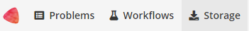
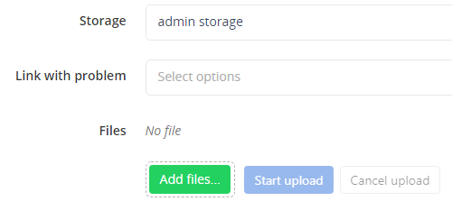

The text string _lbl should not be used in image names since it is a reserved string for ground truth annotation images.
It is possible to install BIAFLOWS on a local server or a desktop computer. This might be useful to manage and analyse images locally. The procedure is described below and should take less than 30 minutes (UNIX-like based system recommended).
The procedure described in this section is for Linux Ubuntu but it should be possible to install BIAFLOWS on other platforms (not tested). Some specific details related to deployment on Mac OS can be found online.
BIAFLOWS runs in Docker containers, the only requirement is to install Docker. Check official Docker documentation to install Docker for Ubuntu. Choose Install using the repository, set up the repository and install Docker CE.
Enter the following commands in a terminal:
mkdir Biaflows
cd Biaflows
git clone https://github.com/Neubias-WG5/Biaflows-bootstrap.git
cd Biaflows-bootstrap
Edit configuration.sh and, if needed, update URLs (CORE_URL, IMS_URL, UPLOAD_URL).Make sure to use URLs that are not already used by other applications (avoid localhost) to prevent conflicts.
# These URLs have to be accessible (add them to /etc/hosts if you run it locally)
CORE_URL=biaflows
IMS_URL=biaflows-ims
UPLOAD_URL=biaflows-upload
In /etc/hosts of the host machine, add the following lines, adapting them accordingly to chosen XXX_URL in configuration.sh, for example:
127.0.0.1 biaflows
127.0.0.1 biaflows-ims
127.0.0.1 biaflows-upload
If needed, update data path variables (IMS_STORAGE_PATH …).
# These paths must exist
IMS_STORAGE_PATH=/biaflows/data/images
IMS_BUFFER_PATH=/biaflows/data/_buffer
SOFTWARE_DOCKER_IMAGES_PATH=/biaflows/data/workflows
SERVER_SSHKEYS_PATH=/biaflows/data/ssh
All data paths must be valid and mappable in the Docker engine.
If they don't exist, create all the directories (mkdir) corresponding to
the above variables, for example:
mdkir -p /biaflows/data/images
mdkir -p /biaflows/data/_buffer
mdkir -p /biaflows/data/workflows
mdkir -p /biaflows/data/ssh
A reference to these URLs and paths is provided here: https://doc.uliege.cytomine.org/display/PubOp/Cytomine+configuration+reference
Configure BIAFLOWS_WORKFLOWS_METRICS to true or false
depending if you want to perform benchmarking. If set to true,
ground truth annotations are then required for all images.
Setting this flag to false is the valid option if you plan to manage and
process local images.
Run the installation script: sudo bash init.sh
Run the generated deployment script: sudo bash start.sh
When start up is finished, check that the application is running in your browser at the URL specified by CORE_URL (default: http://biaflows).
Three accounts with different access rights are automatically created:
After BIAFLOWS is successfully installed locally, the local instance is empty. All projects available in BIAFLOWS online instance can be imported to the local instance. For this, get the public and private keys of the admin account (Account page), then run:
cd Biaflows-bootstrap
sudo bash ./inject_demo_data.sh ADMIN_PUBLIC_KEY ADMIN_PRIVATE_KEY
where ADMIN_PUBLIC_KEY and ADMIN_PRIVATE_KEY
have been substituted with their respective values.
The script starts to download projects and import them in your local BIAFLOWS.
The list of imported projects can be tweaked by editing the file
Biaflows-bootstrap/configs/project_migrator/projects.txt.
The whole data injection procedure can take several minutes, depending on your Internet connection and the number of projects being imported.
To create a new problem, provided your user has rights, go to the Problems tab
The problem is ready to be configured, if you hold annotations for all the images of the problem and plan to perform benchmarking the following configuration is recommended:
If you do not hold ground truth annotations for your images or do not want to perform benchmarking, untick the next to last option.
It is also possible to specificy if annotations from workflow results should be created and uploaded to BIAFLOWS after every workflow run with the last option.
Note: Currently, the ground truth annotations layer is not created automatically but by a specific Python script, this will be automated in a future release. It however does not affect the whole benchmarking process in any way.
Assign your problem to a problem class (see Problem Class, Ground truth annotations and reported metrics) by clicking on Change problem class. The problem class specifies the format of ground truth annotations (and workflow outputs), as well as the associated benchmark metrics to be computed (if benchmark is enabled).
If you work alone, you can leave contributors and project managers to default user. This can be done from the Members tab in the problem configuration.
The problem can be fully configured to display or hide panels / tabs / tools in the user interface. This is achieved from the Custom UI tab in the problem configuration.
A description of the problem can optionally be added from the Information (left sidebar). The description is displayed in Problems list.
The text string _lbl should not be used in image names since it is a reserved string for ground truth annotation images.

Select the Problem to which the images should be associated with (Link with problem). 
If a problem is not in the list, make sure you are a member for this problem.
Click on Add files… and select the files from the file browser.
Start upload with Start upload and wait until completion
The status can be:
DEPLOYED/CONVERTED: The image is correctly imported to BIAFLOWSERROR FORMAT: The file format is not supportedERROR EXTRACTION: Something went wrong during metadata extractionERROR CONVERSION: Something went wrong during the conversion of the image into the BIAFLOWS internal image formatERROR DEPLOYMENT: Something went wrong during the communication with BIAFLOWS API. It can be due to access rights, or other unexpected errorImages uploaded to storage can also be associated to a Problem after upload (Problem > Add image). This can be useful to associate the same image to several Problems.
If you plan to perform benchmarking, ground truth annotations should also be uploaded and associated to every image of a problem. The format of these annotations depends on the associated problem class (see Problem Class, ground truth annotations and reported metrics).
Image annotations (e.g. binary masks) should be uploaded as 16-bit OME-TIFF (or TIFF) files
for 2D images and as Multi-TIFF 16-bit
OME-TIFF files
for multidimensional (C,Z,T) images. They should be uploaded by following the procedure
described in the previous section and by setting the same name as their corresponding
image + _lbl suffix (e.g. myImage.ome.tif and myImage_lbl.ome.tif).
Other required annotations (e.g. SWC, division text file) should be added to the images as attached files. To do so, expand the image (blue arrow) in the list and click on Add next to Attached files.
It is possible to integrate existing BIAFLOWS workflows to any BIAFLOWS instance. This operation requires configuring an external trusted source made of:
If your workflow repositories are mixed with other repositories in your user space,
you can specify a prefix to distinguish workflow repositories. For instance,
all bioimage analysis workflows developed by NEUBIAS are prefixed by W_ and
available from this user space: https://github.com/Neubias-WG5.
Some information regarding trusted sources is given below.
To manage trusted sources, you need to be administrator.
Connect as administrator by clicking Open admin session.
In the administration page, go to Trusted sources tab and click New trusted source.
Fill the form and Save
For instance, to add NEUBIAS curated set of workflows, the trusted source has to be configured as follows:
Trusted sources are periodically checked (about every 5/10 minutes) to automatically add new versions of existing workflows or new workflows, but you can also click on Refresh to trigger the check.
Once a workflow is imported, it has to be linked to a BIAFLOWS Problem. This can be performed in the Configuration panel of the Problem (Workflows tab) by toggling Enable for that workflow as illustrated below: